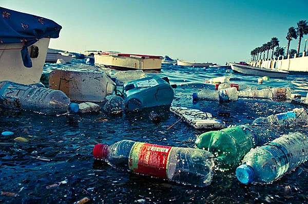
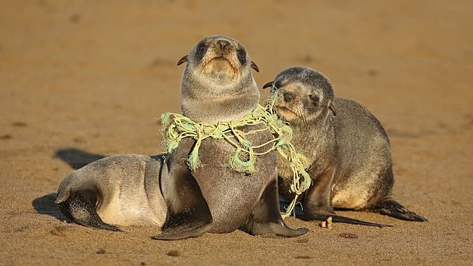
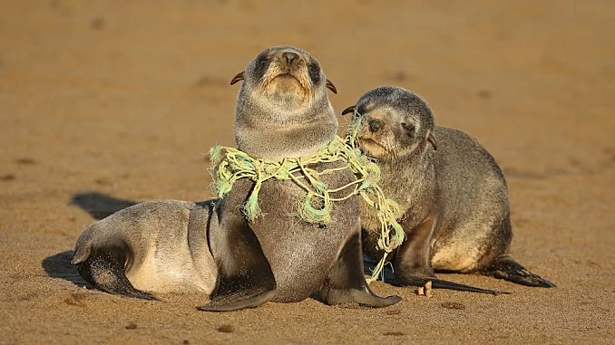

Tout comme les Atlantes, les hommes polluent les mers et océans du monde. En 2019 on compte environ 6,5 millions de tonnes de déchets plasques déversés dans les océans Un problème qui devient un fléau pour la faune aquaque et pour la planète enère.
Les débris flotant dans les océans et les mers sont détruits par des micro-organismes marins. Mais l’arrivée du plasque change ceci. Les déchets déversés par l’homme hors des terres sont constués à 90 % de plasques. Lorsqu’il n’est pas détruit, le plasque émerge à la surface.

Photo du 7ème continent
Le sepème connent ou connent de plasque est une vaste masse de déchets qui occupe 1,6 millions de km2. dans l’océan Pacifique. À mi-chemin entre la Californie et Hawaï, il conendrait 80 000 tonnes de déchets d’après les scienfiques. Une masse de plasque ayant une superficie trois fois plus grande que la France. Une autre masse de déchets d’une superficie beaucoup moins importante a été détectée en 2019 en Méditerranée. L’expédion Méditerranée en danger (MED) a estimé 115 000 déchets par km2.
Photo d’une plage de la mer Méditerranée
« L’eau, qu’elle soit salée ou non, conent en effet une grande variété de micro-organismes (bactéries, algues, etc.) aptes à éliminer progressivement ces matières » Des égouts sous la mer, Henry Augier.

Photo de micro-déchets dans l’océan
Les débris détruits par les micro-organismes et la mer n’ont pas pour autant disparu. Ces micro-débris sont invisibles en surface et en profondeur ne cessent de se répandre et de polluer l’ensemble des océans . Ces derniers ne sont pas sans danger.
Le plasque est donc une menace pour les êtres vivants. Des associaons ont déterminé que chaque année environ 100 000 mammifères marins et 1 million d’oiseaux meurent d’étranglement ou d’étouffement. Plus de 600 espèces sont concernés par cee mortalité. Les oiseaux se nourrissent de débris et de plasques tandis que les tortues les confondent avec des méduses.

 
